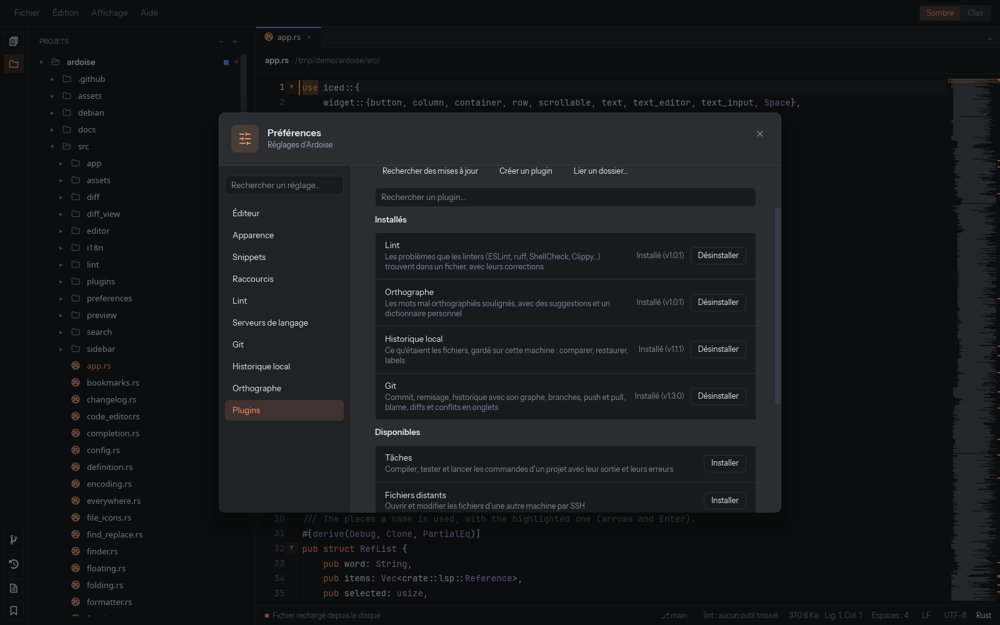
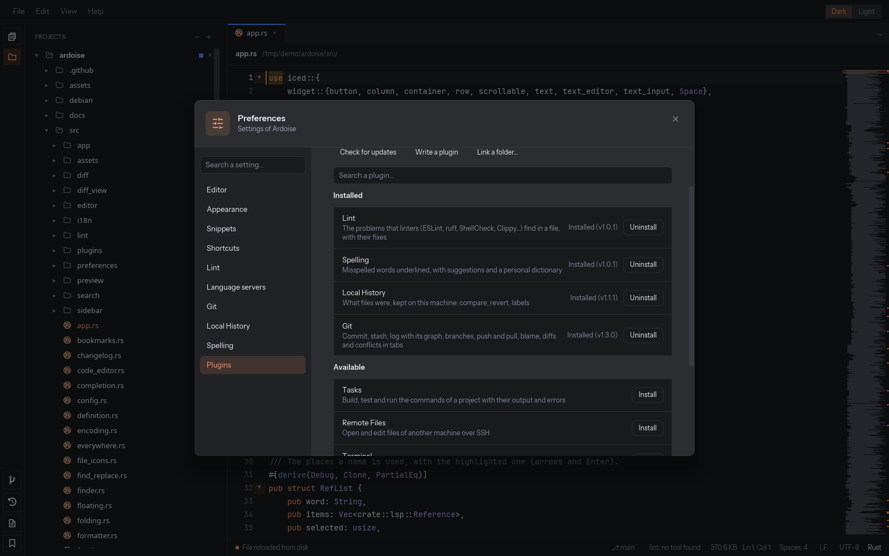

Plugins officielsOfficial plugins
Ardoise est un éditeur simple à l'installation : les plugins ajoutent le reste. Chaque plugin officiel vit dans son propre dépôt de l'organisation ardoise-editor et est signé avec la clé des versions d'Ardoise.Ardoise is a plain editor out of the box: plugins add the rest. Each official plugin lives in its own repository of the ardoise-editor organization and is signed with Ardoise's release key.
GitGit v1.3.0
Git complet, dans un panneau sous l'éditeur.Full Git, in a panel under the editor.
Voir le détailSee details →Base de donnéesDatabase v1.4.1
PostgreSQL, MySQL/MariaDB et SQLite : explorer, modifier, interroger.PostgreSQL, MySQL/MariaDB and SQLite: browse, edit, query.
Voir le détailSee details →APIAPI v1.3.0
Un Postman léger : requêtes, collections, environnements, tests.A light Postman: requests, collections, environments, tests.
Voir le détailSee details →LintLint v1.0.1
Les problèmes de vos fichiers, soulignés pendant la frappe, avec leurs corrections.The problems in your files, underlined as you type, with their fixes.
Voir le détailSee details →OrthographeSpelling v1.0.1
Les mots mal orthographiés soulignés, avec suggestions et dictionnaire personnel.Misspelled words underlined, with suggestions and a personal dictionary.
Voir le détailSee details →Historique localLocal History v1.1.1
Ce qu'étaient vos fichiers, gardé sur la machine, que Git le sache ou non.What your files were, kept on this machine whether Git knows it or not.
Voir le détailSee details →TâchesTasks v1.0.2
Compiler, tester et lancer les commandes d'un projet, avec leur sortie.Build, test and run a project's commands, with their output.
Voir le détailSee details →Fichiers distantsRemote Files v1.1.2
Ouvrir et modifier les fichiers d'une autre machine par SSH.Open and edit the files of another machine over SSH.
Voir le détailSee details →TerminalTerminal v1.1.0
Des shells en onglets sous l'éditeur, avec historique et recherche.Shells in tabs under the editor, with history and search.
Voir le détailSee details →Un plugin, trois gestesA plugin in three moves
Ouvrez les PréférencesOpen the Preferences
Menu Fichier › Préférences…, puis la page Plugins.Menu File › Preferences…, then the Plugins page.
Cherchez et installezSearch and install
Un champ de recherche filtre la liste. Cliquez sur Installer : le plugin est téléchargé depuis son dépôt, sans droits administrateur. Les plugins installés à part de la liste officielle apparaissent aussi.A search box filters the list. Click Install: the plugin is downloaded from its repository, with no administrator rights. Plugins installed apart from the official list show too.
Utilisez son panneauUse its panel
Le panneau du plugin est listé dans Affichage › Panneau, et ses actions dans la recherche d'actions et les menus. Pour le retirer : Désinstaller, sur la même page.The plugin's panel is listed in View › Panel, and its actions in the search for actions and the menus. To remove it: Uninstall, on the same page.


Préférences › Plugins : la liste des plugins officiels avec le champ de recherche, certains installés, d'autres non.Preferences › Plugins: the list of official plugins with the search box, some installed, some not.
Capture à venirScreenshot to comeÉcrire votre pluginWrite your own plugin
Un plugin est un programme accompagné d'un fichier plugin.json : l'éditeur le lance et ils dialoguent en JSON-RPC sur l'entrée et la sortie standard. Les panneaux sont des arbres de nœuds (colonne, ligne, texte, bouton, champ, liste, arbre…) que l'éditeur dessine avec ses propres composants, dans son thème. Écrivez-le en Rust avec le SDK, ou dans n'importe quel langage qui sait lire et écrire sur ses flux standard.
A plugin is a program with a plugin.json beside it: the editor starts it and they talk JSON-RPC over standard input and output. Panels are trees of nodes (column, row, text, button, field, list, tree…) that the editor draws with its own widgets, in its theme. Write it in Rust with the SDK, or in any language that reads and writes its standard streams.
Pour essayer un plugin en cours de développement : Préférences › Plugins › Lier un dossier…. Pour publier : poussez un tag vX.Y.Z ; le workflow du modèle construit les archives Linux et macOS et la somme de contrôle, et n'importe qui peut ensuite l'installer depuis Préférences › Plugins en saisissant propriétaire/nom.
To try a plugin under development: Preferences › Plugins › Link a folder…. To publish: push a vX.Y.Z tag; the template's workflow builds the Linux and macOS archives and the checksums, and anyone can then install it from Preferences › Plugins by typing owner/name.